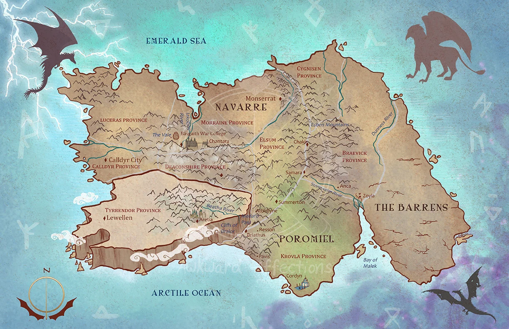

Mapa
Descubra a geografia complexa e os territórios de Basgiath, o lar do Quadrante de Cavaleiros e palco dos eventos da série.

Descubra a geografia complexa e os territórios de Basgiath, o lar do Quadrante de Cavaleiros e palco dos eventos da série.